Corrientes Modernas
Las corrientes modernas son movimientos artísticos que surgieron entre finales del siglo XIX y el siglo XX. Se caracterizan por romper con las reglas tradicionales del arte y buscar nuevas formas de expresión. En estas corrientes, los artistas experimentan con colores, formas y técnicas, dando más importancia a la creatividad, la emoción y la innovación que a la representación exacta de la realidad.
Impresionismo
XIX
Movimiento artístico que se enfoca en capturar la luz y el momento exacto de una escena. Se caracteriza por el uso de pinceladas rápidas, colores vivos y la representación de escenas cotidianas al aire libre. Los artistas buscaban mostrar cómo cambia la luz en diferentes momentos del día, más que los detalles exactos.
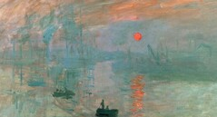
Impresión, sol naciente (1872)
Claude Monet
Captura el amanecer en un puerto con pinceladas sueltas. Esta obra dio nombre al impresionismo.
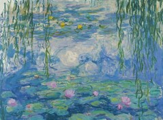
Nenúfares (1916)
Claude Monet
Serie de pinturas de su jardín donde estudia la luz y el reflejo del agua.
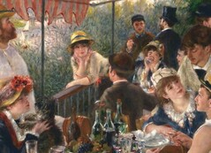
El almuerzo de los remeros (1881)
Pierre-Auguste Renoir
Escena social llena de luz, donde se muestra la convivencia y alegría de la vida cotidiana.
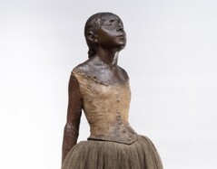
Bailarina de catorce años (1881)
Edgar Degas
Escultura realista que muestra el esfuerzo y disciplina de las bailarinas.
Expresionismo
XX
Movimiento que rompe con la forma tradicional de representar la realidad. Utiliza figuras geométricas y muestra varios puntos de vista al mismo tiempo en una misma imagen. Esto hace que los objetos se vean fragmentados o descompuestos.
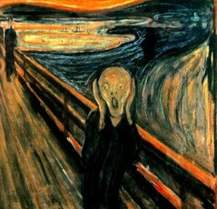
El grito(1893)
Edvard Munch
Representa angustia y ansiedad con colores intensos y formas distorsionadas.
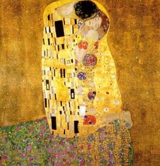
El beso(1908)
Gustav Klimt
Obra decorativa con dorado que simboliza amor y unión.
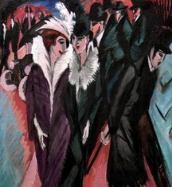
La calle(1913)
Ernst Ludwig Kirchner
Muestra la vida urbana de forma inquietante y emocional.
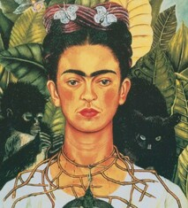
Autorretrato con collar de espinas(1940)
Frida Kahlo
Expresa dolor físico y emocional a través de símbolos personales.
Cubismo
XX
Se centra en la expresión de emociones intensas, incluso deformando la realidad para transmitir sentimientos como angustia, miedo o tristeza. No busca representar el mundo tal como es, sino cómo se siente.
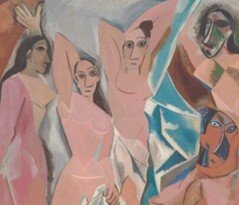
Las señoritas de Avignon (1907)
Pablo Picasso
Rompe con la perspectiva tradicional usando formas geométricas.
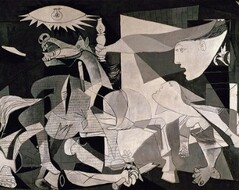
Guernica(1937)
Pablo Picasso
Denuncia los horrores de la guerra con imágenes impactantes en blanco y negro.
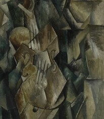
Violín y paleta (1909)
Georges Braque
Ejemplo del cubismo analítico, donde los objetos se fragmentan.
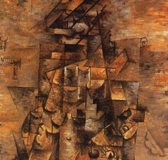
Hombre con guitarra (1911)
Georges Braque
Representa figuras desde múltiples puntos de vista al mismo tiempo.
Surrealismo
XX
Se basa en el mundo de los sueños, la imaginación y el subconsciente. Presenta imágenes extrañas o irreales que parecen sacadas de un sueño. Busca explorar lo que hay en la mente más allá de la realidad.
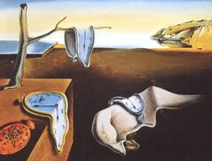
La persistencia de la memoria (1931)
Salvador Dalí
Relojes derretidos que simbolizan el paso del tiempo de forma irreal.
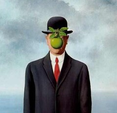
El hijo del hombre (1964)
René Magritte
Oculta el rostro con una manzana, cuestionando lo visible.
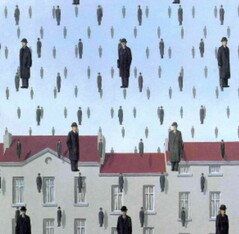
La traición de las imágenes (1929)
René Magritte
Muestra una pipa con el texto “esto no es una pipa”, jugando con la realidad.
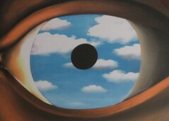
El falso espejo (1929)
René Magritte
Un ojo que refleja el cielo, mezclando percepción y realidad.
Arte abstracto
XX
Se caracteriza por no representar objetos reales. Utiliza formas, colores y líneas para expresar ideas o emociones. El significado de la obra depende de la interpretación de cada persona.
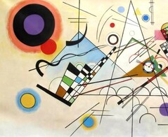
Composición VIII (1923)
Wassily Kandinsky
Usa formas y colores para transmitir emociones sin representar objetos reales.
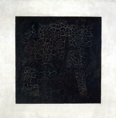
Cuadrado negro (1915)
Kazimir Malevich
Obra radical que elimina toda representación y se centra en la forma pura.
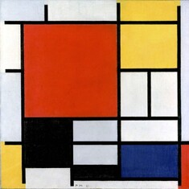
Composición con rojo, azul y amarillo (1930)
Piet Mondrian
Equilibrio visual con líneas y colores básicos.
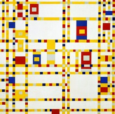
Broadway Boogie Woogie (1943)
Piet Mondrian
Inspirada en la ciudad de Nueva York y su ritmo dinámico.
Futurismo
XX
Movimiento artístico que exalta la velocidad, el movimiento y la tecnología. Se inspira en el progreso industrial, las máquinas y la vida moderna. Las obras suelen mostrar dinamismo, como si las figuras estuvieran en movimiento constante.
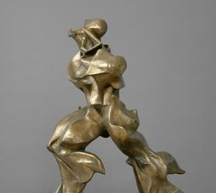
Formas únicas de continuidad en el espacio (1913)
Umberto Boccioni
Escultura que transmite movimiento y velocidad.
Dinamismo de un perro con correa (1912)
Giacomo Balla
Muestra el movimiento repitiendo las formas.
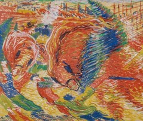
La ciudad que surge (1910)
Umberto Boccioni
Representa el crecimiento urbano y la energía moderna.
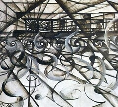
Velocidad de automóvil (1913)
Giacomo Balla
Expresa rapidez y tecnología con líneas dinámas.
Dadaísmo
XX
Movimiento artístico que surge como una protesta contra la guerra y las normas tradicionales del arte. Se caracteriza por lo absurdo, lo ilógico y lo provocador. Los artistas buscaban romper las reglas y cuestionar qué es realmente el arte.
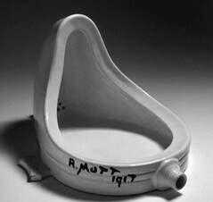
Fuente (1917)
Marcel Duchamp
Un objeto cotidiano convertido en arte para provocar y cuestionar.
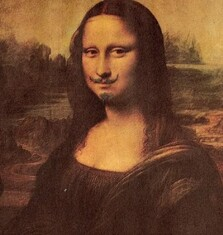
.H.O.O.Q. (1919)
Marcel Duchamp
Intervención de una imagen famosa para desafiar el arte tradicional.
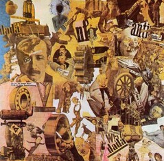
Corte con el cuchillo de cocina… (1919)
Hannah Höch
Collage que critica la sociedad y la política.
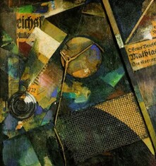
Merzbild 25A (La estrella) (1920)
Kurt Schwitters
Composición hecha con materiales reciclados.